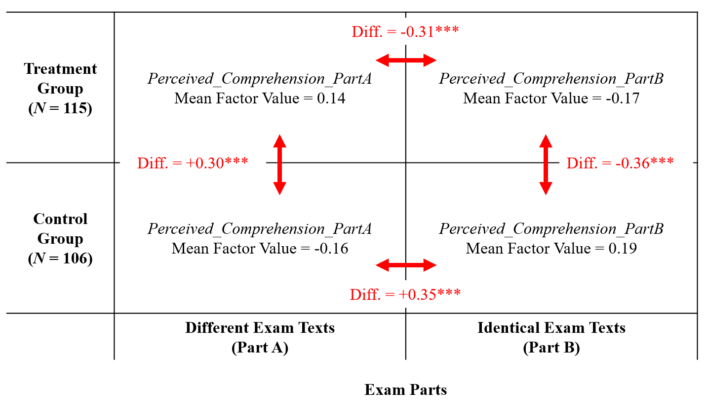

Tackling Professorial Expert Bias: The Role of ChatGPT in Simplifying Financial Accounting Exam Texts↗
Experts tend to produce complex texts but mistakenly consider them an easy read for their audience. Accounting professors likely exhibit such expert bias in formulating exams. Consequently, students struggle with comprehension, giving rise to high failure rates and a shortage of talent for the profession. This study explores the potential of ChatGPT for overcoming expert bias and improving financial accounting exam texts to increase comprehension and performance and reduce frustration and confusion.
We ask three key questions: (1) Does text modification with ChatGPT lead to increased perceived comprehension? (2) Does text modification with ChatGPT result in better performance? and (3) Does perceived comprehension mediate the relationship between ChatGPT-based text modification and performance? We find that students benefit from ChatGPT-based modification through increased perceived comprehension and reduced confusion and frustration. Causal mediation analysis suggests that improved perceived comprehension attributes significantly to exam performance, but we cannot document an overall positive effect.

@article{voshaar2025tackling,
title = {Tackling Professorial Expert Bias: The Role of ChatGPT in Simplifying Financial Accounting Exam Texts},
author = {Voshaar, Jan and Wecks, Jan Ole and Plate, Benedikt J. and Zimmermann, Jochen},
journal = {Issues in Accounting Education},
volume = {40},
number = {1},
pages = {93--},
year = {2025}
}